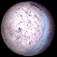
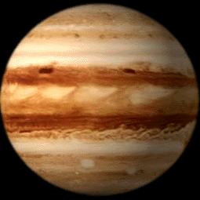

| 12 Planets (size proportional to Sqrt(Radius)) | |||||||||||||
|  |  |
 | See Key |
||||||||||
(2.568 billion left on main sequence)
| stargen 1835545534-0 | |||||||||||||||||||||||||||||
|---|---|---|---|---|---|---|---|---|---|---|---|---|---|---|---|---|---|---|---|---|---|---|---|---|---|---|---|---|---|
| |||||||||||||||||||||||||||||
| Stellar characteristics | |||||||||||||||||||||||||||||
| Stellar mass | 1.06 solar masses | ||||||||||||||||||||||||||||
| Stellar luminosity | 1.32 | ||||||||||||||||||||||||||||
| Age | 5.438 billion years (2.568 billion left on main sequence) | ||||||||||||||||||||||||||||
| Habitable ecosphere radius | 1.150 AU (0.936 - 1.660 AU) | ||||||||||||||||||||||||||||
| Planetary Overview | ||||||
|---|---|---|---|---|---|---|
| # | Type | Dist. | Mass | Radius | ||
| 1 |  |
Rock | 0.348 AU | 0.039 EM | 0.343 ER | |
| 2 | |
Rock | 0.453 AU | 0.019 EM | 0.268 ER | |
| 3 | |
Rock | 0.513 AU | 0.192 EM | 0.581 ER | |
| 4 | |
Rock | 0.701 AU | 0.086 EM | 0.445 ER | |
| 5 | Venusian | 0.976 AU | 2.692 EM | 1.376 ER | ||
| 6 | Ice | 2.137 AU | 0.889 EM | 0.963 ER | ||
| 7 |  |
Sub-Jovian | 2.551 AU | 16.807 EM | 4.043 ER | |
| 8 | Ice | 4.465 AU | 1.115 EM | 1.036 ER | ||
| 9 | Jovian | 6.145 AU | 907.145 EM | 13.922 ER | ||
| 10 | Jovian | 10.755 AU | 126.657 EM | 8.214 ER | ||
| 11 | Jovian | 33.258 AU | 39.441 EM | 6.421 ER | ||
| 12 | |
Rock | 49.270 AU | 0.039 EM | 0.458 ER | |
| Planet #1 Statistics | |||||||||||||
|---|---|---|---|---|---|---|---|---|---|---|---|---|---|
| Planet type | Tidally Locked 1 Face Low-G, Hot, Airless, 1-Face | ||||||||||||
| Distance from primary star | 5.2E+07 KM | 0.348 AU | |||||||||||
| Mass | 2.3E+23Kg | 0.039 Earth masses | |||||||||||
| Surface gravity | 326.3 cm/sec2 | 0.33 Earth gees | |||||||||||
| Surface pressure | 0 millibars | 0.000 Earth atmospheres | |||||||||||
| Surface temperature | 215.0° Celcius 419.1° Fahrenheit | +201.0° C Earth temperature +361.9° F Earth temperature | |||||||||||
| Normal temperature range |
| ||||||||||||
| Equatorial radius | 2189.9 Km | 0.34 Earth radii | |||||||||||
| Density | 5.33 grams/cc | 0.97 Earth densities | |||||||||||
| Eccentricity of orbit | 0.022 | ||||||||||||
| Escape Velocity | 3.8 Km/sec | ||||||||||||
| Molecular weight retained | 607.3 and above | ||||||||||||
| Axial tilt | 11° | ||||||||||||
| Planetary albedo | 0.07 | ||||||||||||
| Exospheric Temperature | 13931.43° K | +12658.43° C Earth temperature | |||||||||||
| Length of year | 72.76 Earth days | 1.00 Local days | |||||||||||
| Length of day | 1746.19 hours | ||||||||||||
| Boiling point of water | -273.1° Celcius -459.7° Fahrenheit | ||||||||||||
| Hydrosphere percentage | 0.0 | ||||||||||||
| Cloud cover percentage | 0.0 | ||||||||||||
| Ice cover percentage | 0.0 | ||||||||||||
| Planet #2 Statistics | |||||||
|---|---|---|---|---|---|---|---|
| Planet type | Tidally Locked 1 Face Low-G, Hot, Airless, 1-Face | ||||||
| Distance from primary star | 6.8E+07 KM | 0.453 AU | |||||
| Mass | 1.1E+23Kg | 0.019 Earth masses | |||||
| Surface gravity | 254.1 cm/sec2 | 0.26 Earth gees | |||||
| Surface pressure | 0 millibars | 0.000 Earth atmospheres | |||||
| Surface temperature | 154.7° Celcius 310.5° Fahrenheit | +140.7° C Earth temperature +253.3° F Earth temperature | |||||
| Normal temperature range |
| ||||||
| Equatorial radius | 1708.4 Km | 0.27 Earth radii | |||||
| Density | 5.32 grams/cc | 0.96 Earth densities | |||||
| Eccentricity of orbit | 0.064 | ||||||
| Escape Velocity | 2.9 Km/sec | ||||||
| Molecular weight retained | 589.9 and above | ||||||
| Axial tilt | 25° | ||||||
| Planetary albedo | 0.07 | ||||||
| Exospheric Temperature | 8222.55° K | +6949.55° C Earth temperature | |||||
| Length of year | 108.05 Earth days | 1.00 Local days | |||||
| Length of day | 2593.19 hours | ||||||
| Boiling point of water | -273.1° Celcius -459.7° Fahrenheit | ||||||
| Hydrosphere percentage | 0.0 | ||||||
| Cloud cover percentage | 0.0 | ||||||
| Ice cover percentage | 0.0 | ||||||
| Planet #3 Statistics | |||||||
|---|---|---|---|---|---|---|---|
| Planet type | Tidally Locked 1 Face Low-G, Hot, Airless, 1-Face | ||||||
| Distance from primary star | 7.7E+07 KM | 0.513 AU | |||||
| Mass | 1.1E+24Kg | 0.192 Earth masses | |||||
| Surface gravity | 556.5 cm/sec2 | 0.57 Earth gees | |||||
| Surface pressure | 0 millibars | 0.000 Earth atmospheres | |||||
| Surface temperature | 128.6° Celcius 263.4° Fahrenheit | +114.6° C Earth temperature +206.2° F Earth temperature | |||||
| Normal temperature range |
| ||||||
| Equatorial radius | 3706.9 Km | 0.58 Earth radii | |||||
| Density | 5.37 grams/cc | 0.97 Earth densities | |||||
| Eccentricity of orbit | 0.083 | ||||||
| Escape Velocity | 6.4 Km/sec | ||||||
| Molecular weight retained | 96.5 and above | Xe | |||||
| Axial tilt | 17° | ||||||
| Planetary albedo | 0.07 | ||||||
| Exospheric Temperature | 6388.97° K | +5115.97° C Earth temperature | |||||
| Length of year | 130.56 Earth days | 1.00 Local days | |||||
| Length of day | 3133.40 hours | ||||||
| Boiling point of water | -273.1° Celcius -459.7° Fahrenheit | ||||||
| Hydrosphere percentage | 0.0 | ||||||
| Cloud cover percentage | 0.0 | ||||||
| Ice cover percentage | 0.0 | ||||||
| Planet #4 Statistics | |||||||
|---|---|---|---|---|---|---|---|
| Planet type | Tidally Locked 1 Face Low-G, Hot, Airless, 1-Face | ||||||
| Distance from primary star | 1E+08 KM | 0.701 AU | |||||
| Mass | 5.1E+23Kg | 0.086 Earth masses | |||||
| Surface gravity | 424.2 cm/sec2 | 0.43 Earth gees | |||||
| Surface pressure | 0 millibars | 0.000 Earth atmospheres | |||||
| Surface temperature | 70.8° Celcius 159.4° Fahrenheit | +56.8° C Earth temperature +102.2° F Earth temperature | |||||
| Normal temperature range |
| ||||||
| Equatorial radius | 2839.7 Km | 0.45 Earth radii | |||||
| Density | 5.35 grams/cc | 0.97 Earth densities | |||||
| Eccentricity of orbit | 0.025 | ||||||
| Escape Velocity | 4.9 Km/sec | ||||||
| Molecular weight retained | 88.7 and above | Xe | |||||
| Axial tilt | 29° | ||||||
| Planetary albedo | 0.07 | ||||||
| Exospheric Temperature | 3431.12° K | +2158.12° C Earth temperature | |||||
| Length of year | 208.11 Earth days | 1.00 Local days | |||||
| Length of day | 4994.73 hours | ||||||
| Boiling point of water | -273.1° Celcius -459.7° Fahrenheit | ||||||
| Hydrosphere percentage | 0.0 | ||||||
| Cloud cover percentage | 0.0 | ||||||
| Ice cover percentage | 0.0 | ||||||
| Planet #5 Statistics | |||||||
|---|---|---|---|---|---|---|---|
| Planet type | Venusian High-G, Hot, Arid, Cloudy, Boiling ocean, Unbreathably thick atmosphere | ||||||
| Distance from primary star | 1.5E+08 KM | 0.976 AU | |||||
| Mass | 1.6E+25Kg | 2.692 Earth masses | |||||
| Surface gravity | 1393.2 cm/sec2 | 1.42 Earth gees | |||||
| Surface pressure | 969977 millibars | 957.293 Earth atmospheres | |||||
| Surface temperature | 1806.3° Celcius 3283.4° Fahrenheit | +1792.3° C Earth temperature +3226.2° F Earth temperature +1738.7° C greenhouse effect (GH) | |||||
| Normal temperature range |
| ||||||
| Equatorial radius | 8777.4 Km | 1.4 Earth radii | |||||
| Density | 5.68 grams/cc | 1 Earth densities | |||||
| Eccentricity of orbit | 0.176 | ||||||
| Escape Velocity | 15.6 Km/sec | ||||||
| Molecular weight retained | 4.5 and above | N, O, CH4, NH3, H2O, Ne, N2, CO... | |||||
| Axial tilt | 16° | ||||||
| Planetary albedo | 0.52 | ||||||
| Exospheric Temperature | 1767.22° K | +494.22° C Earth temperature | |||||
| Length of year | 342.30 Earth days | 617.13 Local days | |||||
| Length of day | 13.31 hours | ||||||
| Boiling point of water | 484.8° Celcius 904.7° Fahrenheit | ||||||
| Hydrosphere percentage | 0.0 | ||||||
| Cloud cover percentage | 100.0 | ||||||
| Ice cover percentage | 0.0 | ||||||
| Planet #6 Statistics | |||||||||||||
|---|---|---|---|---|---|---|---|---|---|---|---|---|---|
| Planet type | Ice Cold, Icy, Arid, Cloudless, Normal atmosphere | ||||||||||||
| Distance from primary star | 3.2E+08 KM | 2.137 AU | |||||||||||
| Mass | 5.3E+24Kg | 0.889 Earth masses | |||||||||||
| Surface gravity | 941.0 cm/sec2 | 0.96 Earth gees | |||||||||||
| Surface pressure | 756 millibars | 0.747 Earth atmospheres | |||||||||||
| Surface temperature | -102.7° Celcius -152.8° Fahrenheit | -116.7° C Earth temperature -210.0° F Earth temperature | |||||||||||
| Normal temperature range |
| ||||||||||||
| Equatorial radius | 6139.4 Km | 0.96 Earth radii | |||||||||||
| Density | 5.48 grams/cc | 0.99 Earth densities | |||||||||||
| Eccentricity of orbit | 0.089 | ||||||||||||
| Escape Velocity | 10.7 Km/sec | ||||||||||||
| Molecular weight retained | 2.1 and above | He, N, O, CH4, NH3, H2O, Ne, N2... | |||||||||||
| Axial tilt | 34° | ||||||||||||
| Planetary albedo | 0.68 | ||||||||||||
| Exospheric Temperature | 368.80° K | -904.20° C Earth temperature | |||||||||||
| Length of year | 1108.61 Earth days | 1701.63 Local days 3.04 Earth years | |||||||||||
| Length of day | 15.64 hours | ||||||||||||
| Boiling point of water | 92.3° Celcius 198.2° Fahrenheit | ||||||||||||
| Hydrosphere percentage | 0.0 | ||||||||||||
| Cloud cover percentage | 0.1 | ||||||||||||
| Ice cover percentage | 96.5 | ||||||||||||
| Planet #7 Statistics | ||
|---|---|---|
| Planet type | ||
| Distance from primary star | 3.8E+08 KM | 2.551 AU |
| Mass | 1E+26Kg | 16.807 Earth masses 5.713 Earth masses dust 11.094 Earth masses gas |
| Equatorial radius | 25783.2 Km | 4 Earth radii |
| Density | 1.40 grams/cc | 0.25 Earth densities |
| Eccentricity of orbit | 0.007 | |
| Escape Velocity | 22.8 Km/sec | |
| Molecular weight retained | 0.3 and above | H, H2, He, N, O, CH4, NH3, H2O... |
| Axial tilt | 22° | |
| Planetary albedo | 0.55 | |
| Exospheric Temperature | 258.73° K | -1014.27° C Earth temperature |
| Length of year | 1446.22 Earth days | 2696.46 Local days 3.96 Earth years |
| Length of day | 12.87 hours | |
| Planet #8 Statistics | |||||||||||||
|---|---|---|---|---|---|---|---|---|---|---|---|---|---|
| Planet type | Ice Cold, Icy, Arid, Cloudless, Normal atmosphere | ||||||||||||
| Distance from primary star | 6.7E+08 KM | 4.465 AU | |||||||||||
| Mass | 6.7E+24Kg | 1.115 Earth masses | |||||||||||
| Surface gravity | 1018.3 cm/sec2 | 1.04 Earth gees | |||||||||||
| Surface pressure | 1190 millibars | 1.174 Earth atmospheres | |||||||||||
| Surface temperature | -154.4° Celcius -245.8° Fahrenheit | -168.4° C Earth temperature -303.0° F Earth temperature | |||||||||||
| Normal temperature range |
| ||||||||||||
| Equatorial radius | 6609.2 Km | 1 Earth radii | |||||||||||
| Density | 5.51 grams/cc | 1 Earth densities | |||||||||||
| Eccentricity of orbit | 0.077 | ||||||||||||
| Escape Velocity | 11.6 Km/sec | ||||||||||||
| Molecular weight retained | 0.4 and above | H, H2, He, N, O, CH4, NH3, H2O... | |||||||||||
| Axial tilt | 33° | ||||||||||||
| Planetary albedo | 0.70 | ||||||||||||
| Exospheric Temperature | 84.46° K | -1188.54° C Earth temperature | |||||||||||
| Length of year | 3348.79 Earth days | 5351.39 Local days 9.17 Earth years | |||||||||||
| Length of day | 15.02 hours | ||||||||||||
| Boiling point of water | 104.7° Celcius 220.5° Fahrenheit | ||||||||||||
| Hydrosphere percentage | 0.0 | ||||||||||||
| Cloud cover percentage | 0.0 | ||||||||||||
| Ice cover percentage | 100.0 | ||||||||||||
| Planet #9 Statistics | ||
|---|---|---|
| Planet type | Jovian | |
| Distance from primary star | 9.2E+08 KM | 6.145 AU |
| Mass | 5.4E+27Kg | 907.145 Earth masses 46.894 Earth masses dust 860.251 Earth masses gas |
| Equatorial radius | 88791.9 Km | 14 Earth radii |
| Density | 1.85 grams/cc | 0.33 Earth densities |
| Eccentricity of orbit | 0.038 | |
| Escape Velocity | 90.3 Km/sec | |
| Molecular weight retained | 0.0 and above | H, H2, He, N, O, CH4, NH3, H2O... |
| Axial tilt | 36° | |
| Planetary albedo | 0.51 | |
| Exospheric Temperature | 44.60° K | -1228.40° C Earth temperature |
| Length of year | 5399.27 Earth days | 21476.39 Local days 14.78 Earth years |
| Length of day | 6.03 hours | |
| Planet #10 Statistics | ||
|---|---|---|
| Planet type | Jovian | |
| Distance from primary star | 1.6E+09 KM | 10.755 AU |
| Mass | 7.6E+26Kg | 126.657 Earth masses 11.122 Earth masses dust 115.535 Earth masses gas |
| Equatorial radius | 52389.1 Km | 8.2 Earth radii |
| Density | 1.26 grams/cc | 0.23 Earth densities |
| Eccentricity of orbit | 0.002 | |
| Escape Velocity | 43.9 Km/sec | |
| Molecular weight retained | 0.0 and above | H, H2, He, N, O, CH4, NH3, H2O... |
| Axial tilt | 31° | |
| Planetary albedo | 0.48 | |
| Exospheric Temperature | 14.56° K | -1258.44° C Earth temperature |
| Length of year | 12515.00 Earth days | 31525.77 Local days 34.26 Earth years |
| Length of day | 9.53 hours | |
| Planet #11 Statistics | ||
|---|---|---|
| Planet type | Jovian | |
| Distance from primary star | 5E+09 KM | 33.258 AU |
| Mass | 2.4E+26Kg | 39.441 Earth masses 4.650 Earth masses dust 34.791 Earth masses gas |
| Equatorial radius | 40956.0 Km | 6.4 Earth radii |
| Density | 0.82 grams/cc | 0.15 Earth densities |
| Eccentricity of orbit | 0.301 | |
| Escape Velocity | 27.7 Km/sec | |
| Molecular weight retained | 0.0 and above | H, H2, He, N, O, CH4, NH3, H2O... |
| Axial tilt | 34° | |
| Planetary albedo | 0.46 | |
| Exospheric Temperature | 1.52° K | -1271.48° C Earth temperature |
| Length of year | 68066.82 Earth days | 122392.17 Local days 186.35 Earth years |
| Length of day | 13.35 hours | |
| Planet #12 Statistics | |||||||||||||
|---|---|---|---|---|---|---|---|---|---|---|---|---|---|
| Planet type | Low-G, Cold, Airless | ||||||||||||
| Distance from primary star | 7.4E+09 KM | 49.270 AU | |||||||||||
| Mass | 2.3E+23Kg | 0.039 Earth masses | |||||||||||
| Surface gravity | 181.6 cm/sec2 | 0.19 Earth gees | |||||||||||
| Surface pressure | 0 millibars | 0.000 Earth atmospheres | |||||||||||
| Surface temperature | -233.0° Celcius -387.4° Fahrenheit | -247.0° C Earth temperature -444.6° F Earth temperature | |||||||||||
| Normal temperature range |
| ||||||||||||
| Equatorial radius | 2920.3 Km | 0.46 Earth radii | |||||||||||
| Density | 2.23 grams/cc | 0.4 Earth densities | |||||||||||
| Eccentricity of orbit | 0.137 | ||||||||||||
| Escape Velocity | 3.3 Km/sec | ||||||||||||
| Molecular weight retained | 0.1 and above | H, H2, He, N, O, CH4, NH3, H2O... | |||||||||||
| Axial tilt | 63° | ||||||||||||
| Planetary albedo | 0.15 | ||||||||||||
| Exospheric Temperature | 0.69° K | -1272.31° C Earth temperature | |||||||||||
| Length of year | 122741.27 Earth days | 82837.93 Local days 336.04 Earth years | |||||||||||
| Length of day | 35.56 hours | ||||||||||||
| Boiling point of water | -81.9° Celcius -115.4° Fahrenheit | ||||||||||||
| Hydrosphere percentage | 0.0 | ||||||||||||
| Cloud cover percentage | 0.0 | ||||||||||||
| Ice cover percentage | 0.0 | ||||||||||||